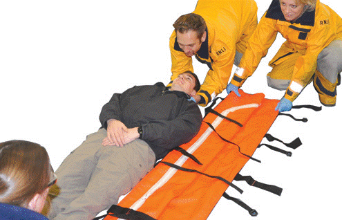
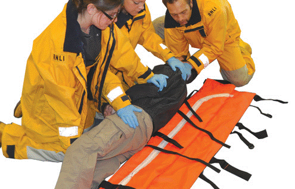
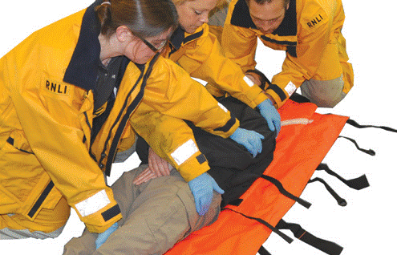
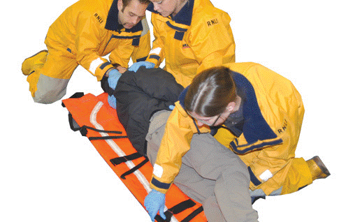
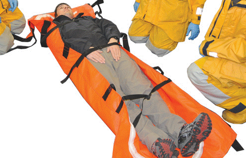
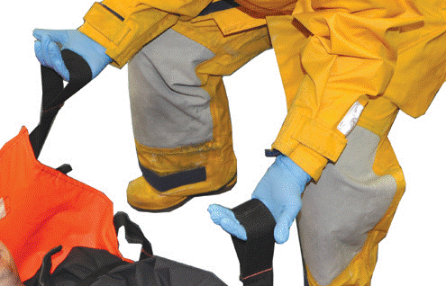
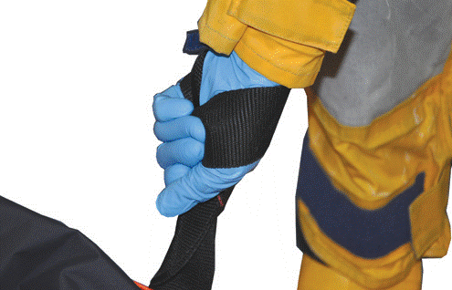

(Lifeboat and Thames crews only)
Ambulance Pouch
Use of the Ambulance Pouch
As a stretcher
Extracting the casualty from a confined space.
Protection of casualty from the elements.
High visibility marker.
Can be used as a kit dump.
As a Jasons Cradle (on D Class).
Not ideal for suspected spinal injuries as it is not rigid.
Safety
Can be put into the Orange Basket stretcher if further
transportation required.
Can be placed into the HELO stretcher if airlift required.
REMEMBER:
TALK to the casualty and explain what youre doing.
Fold or roll the stretcher and place the folded side next to the casualty -

Log roll the casualty onto their side, and pull stretcher close to them. Roll back into the stretcher as shown on photos 2 and 3. Ensure the head is held at all times.


Pull out the folded side, the casualty may need to be rolled in the opposite direction. When fully extended roll the casualty back.

Secure the casualty using the straps.

The photos show the two lifting holds that can be used.
7 8


Lift the casualty using the black handles.
9
To ensure the casualty remains as level as possible when being carried, try to match the height of the crew on opposite sides of the stretcher. Also consider limitations before lifting.
6
4 5
7 8